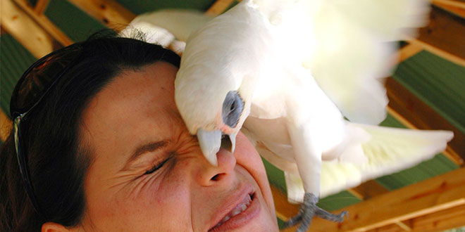

| |
When Good Parrots Go Bad
|
|  |
Ten-year-old umbrella cockatoo Angel rips up the woodwork, and her owners rapidly lose patience with the constant repairs.
Myrtle, a 5-year-old yellow-naped Amazon , screams every morning at sunrise, and her owners can no longer enjoy sleeping late on weekends.
Nine -month-old Congo grey Marti suddenly bites viciously and draws blood “for no reason.”
All of these birds “used to be fine,” according to their owners. What has happened to change them so completely from “good” to “bad?” Is it someone’s fault that things went wrong, and if so, whose?
Angel’s chewing the woodwork is clearly not Angel’s problem. She is obviously having a grand time. The chewing of wood is a natural psittacine behavior, and it is built into parrots’ DNA. Parrots cannot be expected not to chew. So Angel is not being “bad.” Instead, Angel is just being a parrot.
Consequently, chewing woodwork is a human problem, not a parrot problem. By far the easiest way to prevent the chewing of woodwork (and furniture, upholstery, lamps, computers, sound systems, important papers, etc.) is to prohibit the parrot contact with it.
Chewing on wood is a behavior embedded in psittacine psyche. Therefore, wood needs to be provided for safe and satisfying chomping. Indeed, many parrot owners find that frequent offerings of safe woods with bark and leaves (not chemically sprayed, please) can effectively distract that psittacine beak for hours at a time. So instead of trying to change a natural behavior (both impossible and detrimental), look for ways to step around the problem.
The situation of Myrtle’s early morning singing/screaming also falls into the pet bird owners problem not bird’s problem. Myrtle, the yellow nape, is only doing what comes naturally to many species of birds when she performs her morning arias. Ornithologists have repeatedly documented a phenomena called “The Dawn Chorus,” when many avian species loudly proclaim the joy of the new day, the rising of the sun, their survival through the night, the borders of their territory, etc.
Does this mean anyone who lives with psittacines has therefore signed away his or her sleeping late for as long as they both shall live? Not necessarily. Circumventing an apparent instinct, however, should only be done occasionally and only with forethought.
Rather than give up his beloved languorous sleep-in Sunday morning, one ingenious client hit on the perfect compromise with his green-winged macaw. Every Saturday night, he would put his macaw to bed per usual in his sleep cage, which was set up in an unoccupied guest room. This room was equipped with blackout shades and a white noise machine . The shades totally blocked out the light, and the white noise machine blocked the early morning sounds of the birds outside, allowing blissful late sleep on Sunday mornings. So this sensible gentleman developed a compromise between his once-a-week luxury and his macaw’s natural behavior.
The situation with Marti, the 9-month-old Congo grey that bites for no reason is a sad example of blatant cross-species miscommunication. It is a misconception that any animal does something “for no reason.” Instead of, “for no reason,” the words should be rephrased to say, “for no reason the humans understand.”
Because all animals do things for a reason, there is a rationale for the grey’s aggression. The human needs to figure out what that motivation is, and eliminate it.
In Marti’s case, after much analysis, the owners were startled to realize that Marti’s aggression was totally predictable. He was most likely to bite when someone was trying to pet him. More scrutiny revealed that there were multiple steps that led up to the grey’s assault.
Prior to biting, if he could, Marti would scamper away from the hand that was trying to pet him. If he could not move away, he would lean way back and growl when the hand tried to reach around him to stroke him. As the human persisted in the attempts to pet him, Marti would gently, but firmly push away the offending hand repeatedly. Then he would escalate to nipping, and finally resort to drawing blood.
When analyzed in this manner, the picture changes quite dramatically. Instead of the grey viciously attacking, we have an animal that is simply trying to politely discourage a behavior he does not enjoy, only resorting to violence when the human completely fails to understand the bird’s multiple attempts to communicate politely.
If your answer is that the parrot should want to be petted, then I am afraid you misunderstand something very fundamental about psittacines and animals in general. I have worked with many different species of animals over the years, both avian and mammalian, domestic and wild, and I have come to a uncomplicated conclusion regarding petting.
Simply put, there is only one animal on this planet that is likely to want to be petted whenever a human wants to pet it, and that animal is the dog. (We cat owners already know what happens if we try to force ourselves on a cat when it is not in the mood to be petted!) And a parrot is not “a dog with feathers.”
Marti’s owners wish to interject that it is a recent development that Marti stopped wanting to be petted, so they are justified in their confusion as to his motivations. After all, if he used to like it, then why doesn’t he like it now?
This raises another issue entirely. The reality is that parrots are extremely long-lived, intelligent animals, and with intelligence and long life come the ability to change. For several years, my niece used to eat only one brand of cereal for breakfast. She can’t even stand to look at the box, now. As a young adult , I adored putting together plastic models, but those little, teeny pieces drive me buggy, now.
We humans generally change a lot through the years and so do parrots. Marti is starting to grow up, which is not to be confused with “becoming hormonal.” As an integral part of no longer being a baby, Marti is beginning to develop some independence (visualize an 8-year-old boy, here) and form his own opinions about things.
For instance, he is changing his attitude toward being petted. He may have enjoyed cuddling and stroking as a baby but, like most 8-year-old boys, he is developing a strong resistance to it now.
Just because Marti’s owners want to pet him does not make Marti bad because he does not wish to oblige. I am not someone who wishes to be touched by lots of people, and I have the perfect right to enforce my beliefs if someone steps over that line. So do parrots.
When we parrot people find ourselves in conflict with our psittacines, we need to step back from the situation and try to gain some perspective as to what is actually happening. Careful and perceptive observation of psittacine body language is immensely useful.
By paying careful attention, we often find that our birds are clearly communicating why they are doing what they are doing. By watching for patterns, we can learn what situations can get our parrots into trouble and easily avoid them. With careful analysis, we usually find that parrots are only being parrots and, as the “higher life forms” that we like to consider ourselves to be, it is up to the humans to figure out a compromise.
Living with a parrot means living with instinctual behavior. Expecting a parrot to be something other than a parrot is futile and sure to end in failure for all concerned. Some behaviors are instinctive (like chewing and vocalizing), and instinctive behaviors are not “bad.” Caretakers need to evaluate each situation and determine the basis for the behavior and proceed accordingly.
Thanks to miscommunication and misunderstanding, many companion psittacines behave in unacceptable ways, such as screaming for hours or biting everyone around them. It is important for parrot people to understand that negative behaviors need not be written in stone. These behaviors can be changed with patience, understanding and consistency. In other words, a parrot is never a lost cause. |
|
|